Publication
Swaminathan, S., Roumen, T., Kovacs, R., Stangl, D., Mueller, S., Baudisch, P.
Linespace: A Sensemaking Platform for the Blind.
In Proceedings of
CHI ’16
, pp. 2175-2185 .
DOIPaperVideoSlides Talk
Press
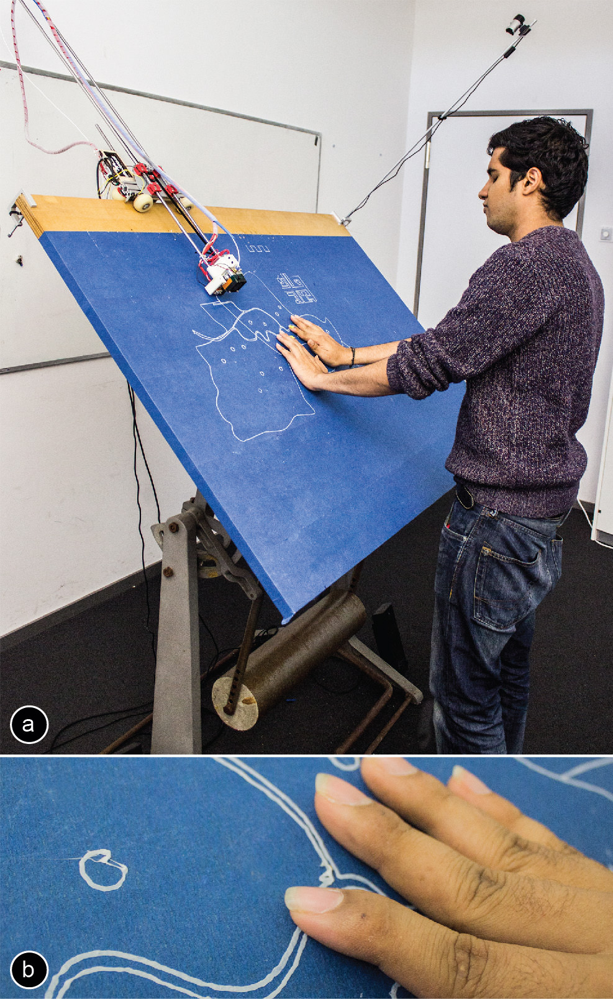
Figure 1: (a) Linespace is a sensemaking platform for the blind. Its custom display hardware offers 140 x 100cm display space and it draws lines as its main primitive. Here Linespace runs the home-finder application that enables users to browse maps in search for a home. (b) Linespace’ main primitive is raised lines, which it produces using a modified 3D printer.
For visually impaired users, making sense of spatial information is difficult as they have to scan and memorize content before being able to analyze it. Even worse, any update to the displayed content invalidates their spatial memory, which can force them to manually rescan the entire display. Making display contents persist, we argue, is thus the highest priority in designing a sensemaking system for the visually impaired. We present a tactile display system designed with this goal in mind. The foundation of our system is a large tactile display (140x100cm, 23x larger than Hyperbraille), which we achieve by using a 3D printer to print raised lines of filament. The system’s software then uses the large space to minimize screen updates. Instead of panning and zooming, for example, our system creates additional views, leaving display contents intact and thus preserving user’s spatial memory. We illustrate our system and its design principles at the example of four spatial applications. We evaluated our system with six blind users. Participants responded favorably to the system and expressed, for example, that having multiple views at the same time was helpful. They also judged the increased expressiveness of lines over the more traditional dots as useful for encoding information.
Linespace Concept
Linespace is an interactive system that consists of hardware and software and that allows visually impaired users to interact with spatial contents.
Linespace offers 8 types of interaction (see Figure 7 for a preview). Its primary way of providing output to users, however, is to render information in the form of raised lines that visually impaired users can explore using their hands.
As illustrated by Figure 1, Linespace’s display area is very large (140cm x 100cm). This is a key aspect of the system, as it allows the software system to minimize display updates in order to preserve user’s spatial memory.
We created Linespace’s display on top of a drafting table. The device can be tilted to allow for any angle between a horizontal and vertical setup. While users can conceptually sit in front of the display, we tend to use it while standing, as this is common for drafting table usage.
Display Hardware
As illustrated by Figure 1, Linespace’s ability to create display output is based on the mechanics of a 3D-printer. The device operates like a plotter, i.e., its print head moves across the display surface in two dimensions.
Figure 2 illustrates the horizontal component. The carriage that holds all motors and electronics rides along the top edge of the drafting table, moving the arm with the print head to the desired x-position.
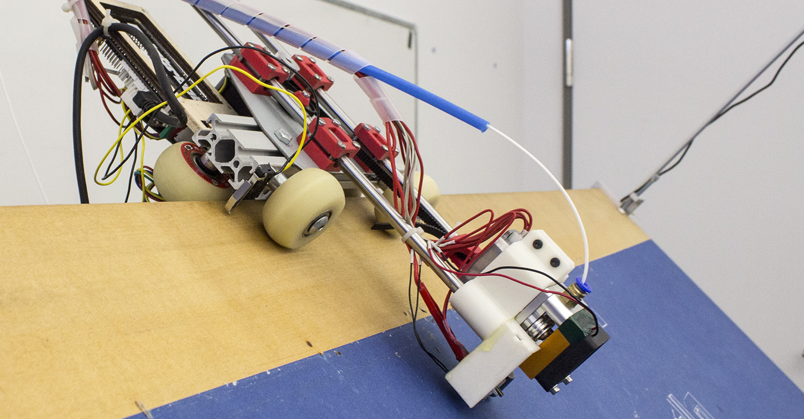
Figure 2: Horizontal actuation: the shown carriage with motors and electronics rides along the top edge of the display board.
In addition, the carriage positions the print head vertically by pulling the arm with the head up and down (Figure 3).
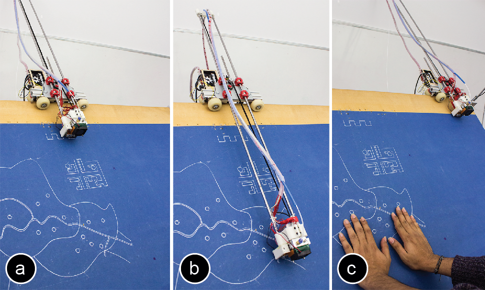
Figure 3: Vertical actuation: (a) printing at the top end of the board, and (b) at the bottom end. (c) When the printer is inactive it moves out of the way.
As illustrated by Figure 4, the lower end of the arm holds the print head that extrudes plastic filament (PLA), which creates the raised lines.
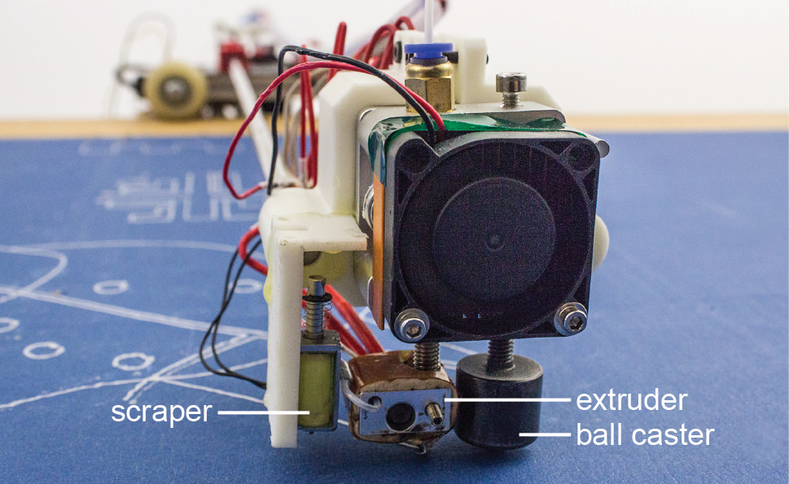
Figure 4: Close-up of the print head: A ball caster stabilizes the print head and keeps it at a fixed distance to the display area. The ball caster also reduces friction.
Next to the print head, we mounted a “scraper”, i.e., a needle mounted perpendicular to the display that allows the system to remove contents. When the scraper is not needed, Linespace can retract it (Figure 5).
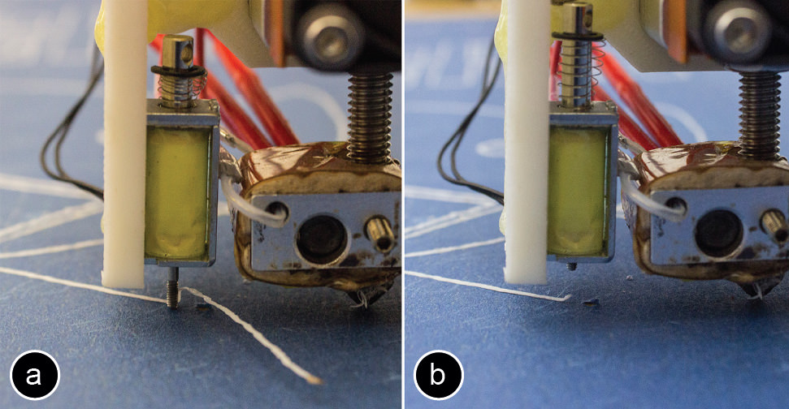
Figure 5: (a) Removing content with the scraper. (b) When not needed, the scraper is retracted.
Linespace Hardware = Tactile Lines, Touch, and Speech
As mentioned above, Linespace’s primary mode of interaction is spatial interaction based on tactile lines. This functionality is key as it allows the system to arrange data spatially in order to leverage users’ spatial memory. Extending on this, we designed Linespace as a platform, i.e., to provide application builders with a rich interaction vocabulary. Linespace therefore also supports transient spatial interaction by pointing and textual interaction based on speech.
All interactions with Linespace are designed with symmetry in mind, i.e., user and system can both perform the same actions. Figure 6 shows this at the example of Linespace’s permanent spatial interaction abilities. (a) The system renders contents by 3D printing, which (b) users perceive by scanning the fingers across the display. (c) Users create output by drawing using a plastic extruder pen (3Doodler [1]), which (d) the system perceives using its camera.
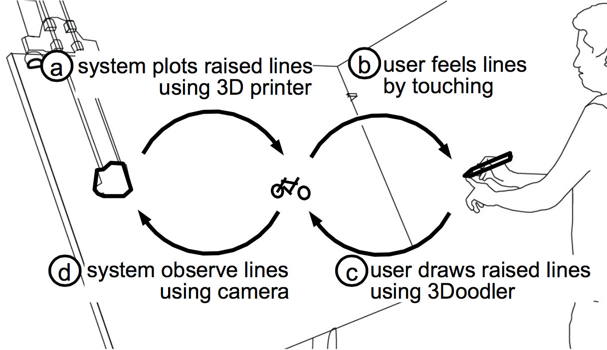
Figure 6: Linespace’s input/output capabilities are designed with symmetry in mind.
Similarly, the system can erase lines by scraping them off using its scraper; so can users, simply using their fingers.
Users can point at printed content on the display, which the system perceives using its camera (we use markers on users’ fingers for the touch recognition). Similarly, the system can point to objects on the display using its print head. The system outputs sound through a wireless speaker mounted to the print head, allowing users to locate the print head based on their auditory sense.
Finally, also Linespace’s textual interaction is symmetric. The system can talk to the user based on speech output. Users can talk to the system by activating speech input by pressing a foot switch.
Figure 7 summarizes Linespace’s input/output capabilities on which we based our software framework.
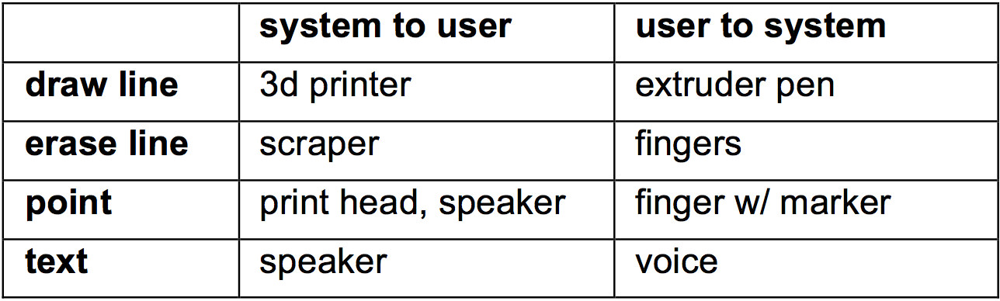
Figure 7: Summary of input/output capabilities.
As illustrated by Figure 4, the lower end of the arm holds the print head that extrudes plastic filament (PLA), which creates the raised lines.
DESIGN RATIONALE
Linespace’s hardware provides it with a large amount of display space and the ability to render lines, a primitive particularly well suited for the content types involved in spatial sensemaking tasks, such as graphs, diagrams, maps, and drawings. Based on this hardware, our objective in designing Linespace’s software system was to allow users to build up and maintain spatial memory of the contents.
Primary design rule: leave displayed contents intact
In order to not destroy spatial memory Linespace’s primary design rule is: “leave printed display contents intact”. We express this using four sub rules:
p1. No panning and scrolling. Instead, extend contents.
p2. No zooming. Instead, add overviews or detail views.
p3. No animation. Instead, use static animation [10].
p4. No pop-ups and dialogs. Instead, use auditory output.
Secondary design rule: spend display space carefully
Within all solutions that satisfy these rules, our secondary design objective is to spare display space, as it is the display space that allows the system to achieve its primary goal.
s1. No unnecessary scale. Render as small as readable.
s2. No chrome. Instead, structure contents with whitespace
s3. No display windows. Traditional windows are a way of reserving space oftentimes before it is really needed. While Linespace allows apps to run in parallel, applications are supposed to start at display size zero and grow their space use over time as needed. Apps have whatever shape their content has, which will typically not be a rectangle.
s4. No displaying of text and no displaying of elaborate icons. Instead, use a small number of simple tactile icons that play back auditory output when touched.
Tertiary design rule: allow for speedy operation
Within all solutions that satisfy these rules, our tertiary design rule is to allow for speedy operation, in particular by handling the limitations of Linespace’s print mechanism.
t1. No printing at app launch: all applications start with a blank display, allowing apps to start instantaneously.
t2. No printing at app switching: Touching content of a different app moves the focus to that app instantaneously. Remove or relocate an application only when another application grows into its display space.
t3. Let users interact while system is printing in regions distant enough from the print arm.
t4. Let system print while user is interacting; pre-render contents likely to become necessary soon.
t5. During printing sonify what is being printed: This allows for immediate feedback. Given that the speaker moves with the print head, it helps users to build up spatial memory of what is printed where.
Demo Applications
We now go over our 4 demo applications and use them to explain how they implement our 3 sets of design rules.
1. Minesweeper
Minesweeper is an adapted version of the minesweeper number puzzle that used to ship with the Windows operating system. Players’ objective is to clear a board containing hidden “mines”, with help from clues about the number of neighboring mines in each field. While not a sensemaking application, minesweeper does involve a good amount of spatial reasoning, so we included it as our first example.
To launch minesweeper, users press the foot switch and say “launch minesweeper”. The app launches with a blank screen (t1) and welcomes users with: “Minesweeper. Your entire screen now is a mine field. Touch anywhere and say “reveal” to see whether there is a bomb. Say “usage” to learn more.” (s4).
As shown in Figure 8a, users tap onto the board and say “reveal”. Minesweeper responds by announcing the item that is located there, i.e., either “free”, “mine”, or a number denoting the mines surrounding that cell. At the same time, Linespace persists this information by plotting an icon at the location. To maximize content density, minesweeper distinguishes only between a “free” cell (a slanted line icon) and cells that have an adjacent mine (a circle icon); instead, the actual number is read out loud every time the user touches the cell (s4). (b) In the shown case, the cell was “free” which causes the app to also reveal surrounding cells. Note how the app separates cells using whitespace rather than gridlines (s2).
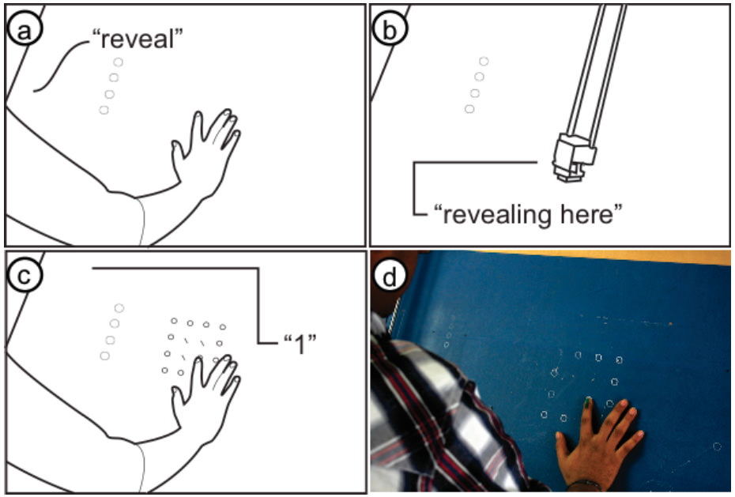
Figure 8: The Minesweeper app (a) reveals a cell, (b) here a free cell. (c) Users scan a local neighborhood of cells with their fingers to infer the location of mines. (d) The prototype.
Users’ spatial task is to locate mines without revealing them. Users scan an area of interest with their fingers, listen to the number and build up a mental model of the constraints. When they infer where a mine must be located they touch that location and say “mine”. The app responds “marking as mine” and draws a mine icon (a triangle).
As users continue to reveal more area of the board, the minesweeper application grows which extends the display space it occupies (p1). To explore the potential of the system, our version of minesweeper is intentionally designed to fill the entire display area by default (>9000 cells). If users solve the entire puzzle, the app plays a congratulatory message and terminates.
After a brief pause, the app manager starts to free up the app’s display space by scraping off all contents (Figure 9a).
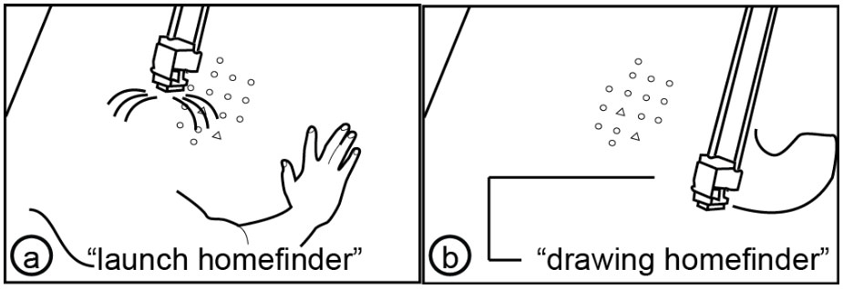
Figure 9: The app manager cleans up space until (a) the user requests a new application, which (b) causes Linespace to interrupt its clean up immediately.
Users do not have to wait though. They can switch to a different app or (b) launch a new app (e.g., re-launch the game) in a fresh screen region any time. The system accommodates this by interrupting its clean up, allowing it to respond instantaneously (t3).
2. Homefinder
Homefinder is a simple app that allows users to search for real estate, such as a four bedroom in a city.
When users launch homefinder, the app launches with a blank screen (t1) and welcomes users with: “Welcome to homefinder. What city or neighborhood to plot where?” (s4). Users point to an empty screen region and name their city and neighborhood. Homefinder responds by saying, e.g. “63 homes” and plotting a few characteristic landmarks, such as an outline of the city (Figure 10a). The user says “filter four rooms or more” to reduce the set of houses. The system responds, e.g. with “12 homes found”. (b) When users say “draw”, homefinder plots the homes onto the map (Figure 10c), each one as a simple icon (a circle).
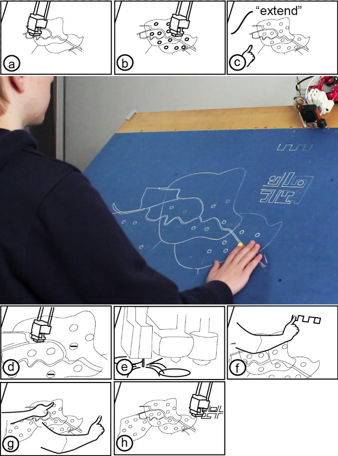
Figure 10: The home finder application.
To learn more about a home, users scan the map with their fingers, pause over a circle icon and say “reveal”. Homefinder responds with a brief verbal description of the place, in prioritized order starting with price, number of rooms, etc.
(c) When the query does not find enough homes in the neighborhood, users can point at a blank space and say “extend”, causing homefinder to sketch an additional neighborhood and populate it with homes, in this case responding “7 additional homes found”. Users can also adjust the filters using speech input, e.g. also allowing three rooms, which causes homefinder to fill in additional homes.
(d) To provide users with a sense of what has changed, the additional homes are plotted with a modified icon (a dash inside the circle icon. Similarly, users can reduce the number of homes with the filter, which (e) causes homefinder to scrape off the icons of the surplus homes and replace them with an icon indicating the absence of an item (a dash).
(f) To learn more about the relationship between price and number of places, users can also query a slider by saying “place price slider here”, which causes homefinder to draw a slider at the specified location. Users can now slide their finger up and down the slider while homefinder is continuously announcing the numbers: “300 thousand—16 homes… 350 thousand—12 homes”.
Note how homefinder always provides an auditory summary first and only then refreshes the screen. This is very different from similar applications for sighted users, that tend to update the screen whenever possible, e.g., continuously while users drag a slider. Such tight coupling is only of limited use for visually impaired users, as users cannot take in the spatial display at a useful rate (independent of how fast or slow the system can render the changes).
(g) Finally, when users have found a home that sounds promising and would like to get a better understanding of its surroundings, they can display additional detail. For this, users point at the place with one hand and use their other hand to point at a patch of blank space. When they say “zoom here” Linespace responds by (h) plotting a zoomed in map of the area (p2) in the blank space, allowing the user to examine its potential in detail (Figure 5a).
3. Drawing Application
Since our first two applications are focused on allowing users to explore, we added a drawing app as a means for users to create.
As an example drawing, we explain how to make a bicycle (Figure 11). To draw the front wheel, users place their fingers three inches apart and say “circle, draw”, causing the drawing application to say “drawing circle” and drawing a three-inch circle in between. Users create the rear wheel by pointing at the front wheel and a location eight inches further right, then say “clone, draw”.
To draw the fork, users start by pointing to the center of the front wheel and where they want the upper end to go. After saying “line, draw”, the app draws the line.
To allow for efficient drawing, users can create the frame by using the line tool in “polyline style”, i.e. by specifying all five lines before updating the display. This also allows them to use their fingers as bookmarks as they can keep their fingers on the display. To save a line for later printing, users say “memorize line”, which causes the system to respond with “line memorized”. At the end, when users say “draw”, they get the polyline.
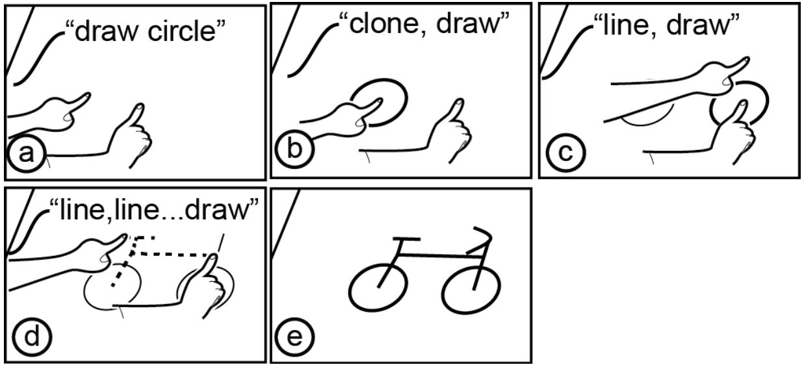
Figure 11: Drawing a bike using the draw app (see Figure 11 for a drawing by a blind user).
Users can also add freehand drawings, such as the curved handles of the bike, by using the hand-held extruder pen.
4. App Manager
The handling of individual applications and their canvases and sub-canvases is done by a program called app manager. App manager also allows users to launch and kill other apps, configure them, and switch between apps. App manager loads automatically whenever Linespace starts up.
App manager launches with a blank screen display (t1) and does not occupy any screen space itself (s2, s3). Instead app manager runs in the background and listens in on speech input (s4), so that all interactions with app manager itself are based on speech.
Users, for example, launch an app by saying “start ”. Linespace responds by loading the respective app and confirms “ loaded” and hands control over to the app, which follows up with a welcome message. The minesweeper app, for example, says “your entire screen now is a mine field. Touch anywhere and say “reveal” to see whether there is a bomb. Or say “usage” to learn more.”
While app manager itself does not occupy display space, its apps do. Users consequently interact with the apps by pointing at them, then adding a verbal command, such as “kill” which causes app manager to terminate the app and remove its screen contents, or “relocate”, which deletes display contents and redraws it to a new location pointed to.
Guided Walkthroughs and Interviews
We organized feedback sessions with six blind users in order to observe how users use Linespace and to collect their thoughts about our system.
Participants
We contacted blind self help organizations to recruit our participants. We invited 6 of them (4 male, 2 female) to our lab. Our participants included: a blind artist (p4), a computer scientist (p2), a person from the blind sport union (p5), a social worker of the national blind organization (p3), and a blind teacher from a blind school (p6). P1 did not want to state his profession. All participants were blind except one (p2) who had 10% remaining vision. Three participants had experience with tactile drawings (p4, p5, p6). Experience with technology varied widely from one participant who has never used a computer (p1) to the computer scientist who works on search engine optimization (p2). Participant’s ages ranged from 39 to 58.
Procedure
At the beginning of each session, we gave users a short introduction on the type of output Linespace produces and on how to interact with the system based on tactile lines, touch, and speech. We then demonstrated Linespace’s drawing and home finder application to our participants.
During the walkthroughs an instructor stood beside the participant and demonstrated how to use the features of each application. After the demonstration, participants then used those features. At the end of the walkthroughs of the application, the participants were interviewed about the system and the principles behind its design.
We encouraged all our users to talk aloud and offer verbal comments during the walkthrough. Whenever comments required more explanation, we encouraged participants to explain their thoughts in more detail. After each walkthrough we conducted semi-structured interviews. Interviews were recorded and the session was video taped.
A guided walkthrough session with interview typically lasted between 1-2 hours.
Walkthrough scenarios
For the drawing application, we asked participants to reproduce a very simple tactile drawing of a car that we had prepared on swell paper. The car consisted of two circles for the wheels as well as two rectangles for the body of the car (see Figure 11 as an example).
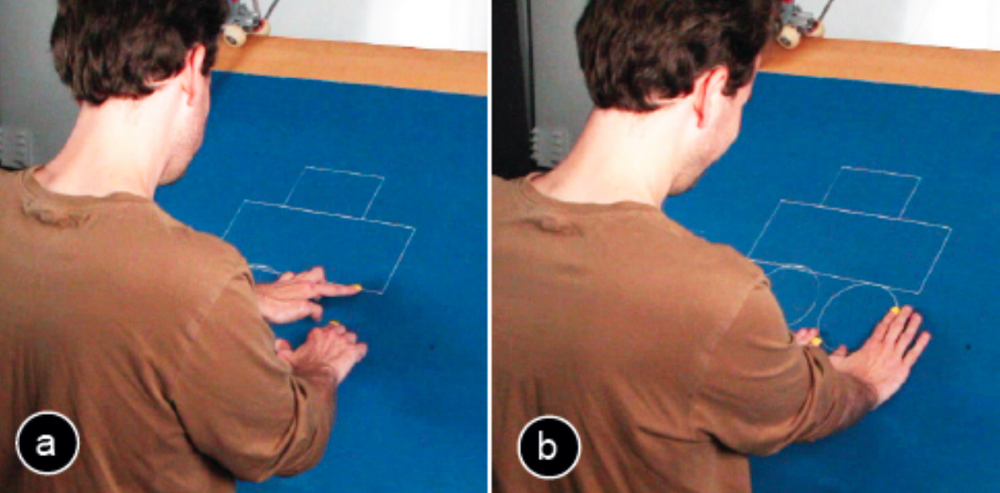
Figure 12: Participant 2 creating a drawing of a car with Linespace.
For the home finder application, we asked participants to find potential new homes of their home city (Figure 12). After selecting their preferred area of living, they used the filters to define the maximum price and the minimum room size. As an additional task, participants were asked to find homes with extra parking space. For this, participants selected two homes of their choice which caused Linespace to print a detailed map of the area on the side of the overview map, which they could then use to compare the houses.
Results
All participants (p1-p6) successfully operated the system and performed the tasks.
Participants responded very favorably to the system. Several participants expressed seeing great potential in using a system like Linespace for their life and work: “there are many situation in which I would use it… for orientation when using maps…in blind schools to teach different shapes, what triangle and rectangle is…” (p3), “it would be great for sharing graphical information with my friends.” (p5), “for making artwork accessible, you point and become special details“ (p3), “it could be fun to play games like chess” (p5), “blind children need to have things drawn to make them understandable—a system like this can help them.“ (p4) “If there are things I want to learn, I can tell the computer to do a painting”. (p6)
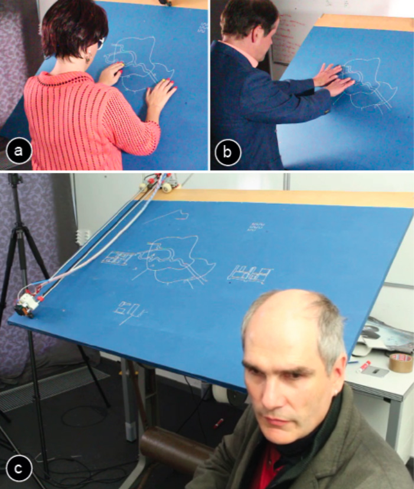
Figure 13: (a,b) Participants using Linespace to find homes in a map. (c) After each guided walkthrough, we interviewed them.
Large display area
Participants pointed out the benefits of having a large display area: “It’s great to have such a big area, where you can put information. This is really more than the 80 characters that most devices can show.” (p3). “If you have a big map it takes a lot of space…you need to zoom in… it’s the biggest problem because you need many states and you lose the reference.” (p2). Some commented directly on the aspects we set as design goals for our system, such as “It is very comfortable to have both [overview and detail] at once, then I can look at both at once.” (p3)
Lines vs. Dots
Participant pointed at the increased expressiveness of creating lines instead of dots with Linespace. “Hyperbraille is better than nothing, but it is quite pixelated. You get very coarse graphics that have corners where there should be none. With your system this is not the case, you get smooth lines.” (p5). “In the refreshable displays we only have dots, but lines would be more comfortable.” (p3). “If you want detailed information of course line drawing is the best” (p6). “It’s more flexible compared to a braille system. In a braille system you can only use points. With your system you can make thicker and thinner lines. This allows to produce more details.” (p5) “The texture of lines could be used to distinguish different types of data. It could also be used to indicate which parts changed”. (p4).
On spatial memory
We also asked participants about their experiences with memorizing spatial content and if additional features such as spatial audio would help: “Spatial audio is not necessary. Blind people know where they put stuff. For instance, if I draw a circle here then I know the circle is there. And even if I miss it slightly, I will quickly find it with my hands.” (p1). “Taking the hands off is no problem, I find stuff that I already have drawn before easily.” (p1). P4 pointed out that “changing the posture makes spatial memory harder” and should therefore be minimized. However, participants also mentioned that there is a limit to spatial memory, especially when it includes long in-between time spans: “when I draw my paintings, I have to wait for each color to dry before I can continue. When I draw very large paintings (> 100x120cm) it can get difficult to remember everything.” (p4). A strategy all participants used to orient themselves on the large board was to use one hand as a static reference point while the other hand was exploring nearby content.
Suggested features
Several participants suggested that the system should allow users to take the tactile drawing off the drafting table: “If I had a map of an area with navigation hints, it would be great if I could take it with me.” (p4), and “If I draw something for my friend, it would be great if I could take it with me when I visit him next time.” (p3). A straightforward way of implementing this would be to attach large sticky notes before a session starts.
One participant felt strongly that the display should be horizontal, barely above her knees (p4). While we had set up the system to an angle of about 45˚ with ergonomics in mind, her main point was to maintain physically constant to the display while the system was drawing in order to better maintain spatial memory and re-find her last location on the board faster.
The same participant also suggested thicker lines to speed up recognition, as well as textured lines to allow recognizing different types of display elements more quickly. We will consider these in future versions e.g., by replacing the nozzle of the embedded 3D printer with a thicker one, as well as adding a texture feature to the line drawing primitive.
Interestingly, speed was not an issue for participants: “It is the best that we have, even if it’s slow.” (p3).
Hardware Implementation
In order to help readers replicate our design, we present a brief overview of the design decisions behind our display hardware. To put some of the design aspects in perspective, we include a discussion of the design process and refer to the earlier versions of Linespace (see Figure 13).
Increased display area
We built our first prototype on a low-end off-the-shelve 3D printer (PrintrBot [22]). This printer is open source and easy to modify, making it well-suited for the project.
During prototyping our application home finder on our V1 device, it became clear that the display area (25.7cm x 12cm even slightly smaller than a Hyperbraille) was so small that any reasonably complex app would have to constantly redraw display contents.
Increasing the display area (v2: 42 x 47.5cm, v3: 65 x 45cm, v4: 140 x 100cm) required us to address several technical challenges. As the arm holding the print head increased in length with every version, we introduced the caster to hold it up and we reinforced the arm to prevent it from jittering sideways. Next we switched to a thicker display surface (now 2.5cm), as previous versions started to bend under the weight of the attached printer.
Procedure
At the beginning of each session, we gave users a short introduction on the type of output Linespace produces and on how to interact with the system based on tactile lines, touch, and speech. We then demonstrated Linespace’s drawing and home finder application to our participants.
During the walkthroughs an instructor stood beside the participant and demonstrated how to use the features of each application. After the demonstration, participants then used those features. At the end of the walkthroughs of the application, the participants were interviewed about the system and the principles behind its design.
We encouraged all our users to talk aloud and offer verbal comments during the walkthrough. Whenever comments required more explanation, we encouraged participants to explain their thoughts in more detail. After each walkthrough we conducted semi-structured interviews. Interviews were recorded and the session was video taped.
A guided walkthrough session with interview typically lasted between 1-2 hours.
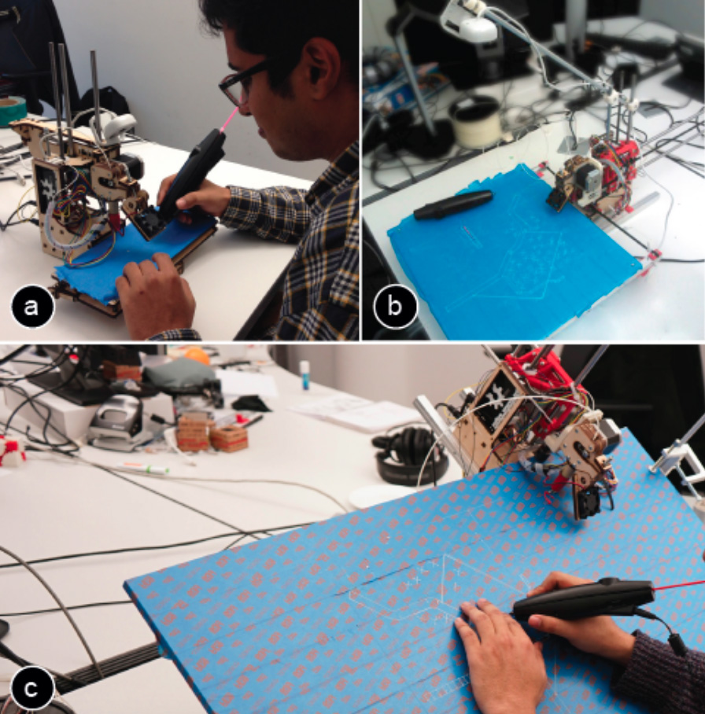
Figure 14: (a) Linespace V1 based on PrintrBot, (b) Linespace V2 with increased display size, (c) Linespace V3 with stationary display and moving printer unit. V4 is shown in Figure 4.
Keeping the table stationary
The original PrintrBot 3D prints by moving the print head in and out, while moving the print bed left and right. This was unsatisfactory, as it caused users to lose their spatial reference. It also prevented users from interacting while the device was in operation (design principles t3, t4).
We addressed this by rebuilding the printer, introducing the carriage shown in Figure 2 that has two stepper motors to move along the horizontal edge of the board and to vertically position the printhead. Earlier versions of the carriage moved on linear bearings along a linear shaft. In the final version of Linespace, the carriage actuates itself by pulling along a belt as shown in Figure 15.
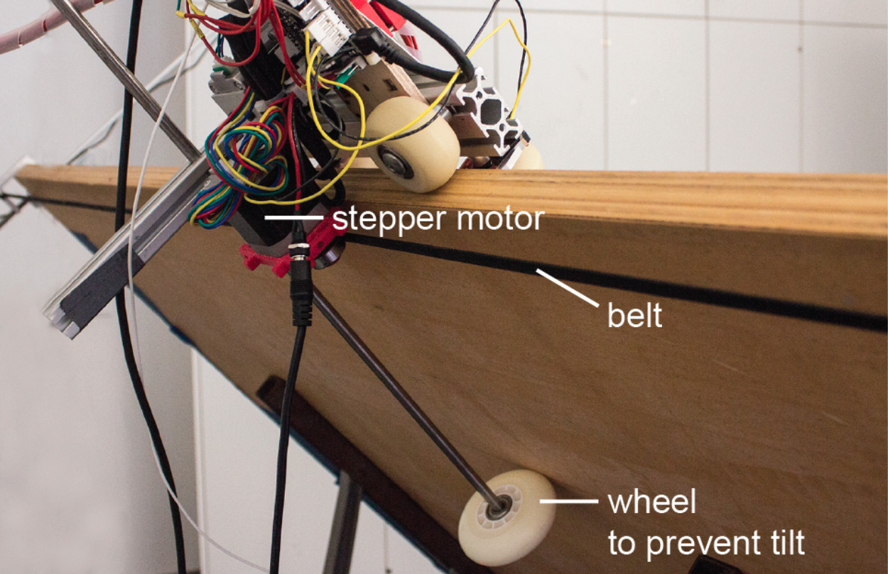
Figure 15: The backside of the final Linespace prototype.
Ergonomic posture
When we switched to the tiltable drafting table for better ergonomics, we added the large wheel at the backside of the device shown in Figure 14. By pushing against the back of the table, the wheel generates a counterforce that prevents the carriage from falling off the edge when the print head is moved to the top edge of the device.
Software Implementation
Linespace’s software is written in Python 3. It uses the PrintrRun library for controlling the printer and several Inkscape extensions for simplifying path geometry.
We use an event driven architecture for sending and receiving events between different components of the system, such as when users select a printed part via touch or when users query information via a voice command. Events are sent to the app manager component and then propagated to the respective apps and their widgets.
For organizing the widgets in apps, we provide various layout containers, such as a stack container and a docking container. These enable system developers to specify how the widgets are distributed in an app.
In the current prototype, the content of the apps comes from the Linespace database and is manually optimized for rendering via the 3D printer. Future versions of Linespace will use live-data from the web, which will also require automatically optimizing the graphics for rendering with Linespace (e.g. using methods from [10]).
Converting vector files to 3D printing g-code
Linespace automatically imports SVG files that specify the tactile paths for an application and and converts them into a set of lines. Linespace then stores these lines as internal geometric objects to enable geometry operations such as resizing the content based on the available space on the print bed.
When the tactile paths are queried for printing, the corresponding internal geometric objects are converted to 3D printer instructions in GCODE. We take the beginning and end point of each line for the print head travel commands (e.g. G1 X0 Y0 followed by G1 X10 Y0 draws a horizontal line). We use three different travel speeds: moving (F3600), printing (F1200), and erasing (F2400). This translated to the printer moving at a speed of 6cm/sec, printing at 2cm/sec and scraping at 4cm/sec. Finally, Linespace also computes how much material should be extruded while moving along a path. For this, Linespace uses a fixed extrusion amount per unit, which is defined by the length of the filament that will be extruded through the nozzle while moving along a certain distance (e.g. printing a distance of 1cm requires the extruder stepper motor to extrude 5mm of filament, GCODE: E5).
Generating GCODE for removing outdated content
To effectively remove lines, we move the scratching pin along the zigzag pattern shown in Figure 15b. To generate the GCODE for the print head movement, we first segment a shape into lines, then offset the start point of each line either towards the normal of the line or the reverse normal.
Beside the horizontal pin movement, Linespace also generates the GCODE for moving the pin up and down via a solenoid. We drive the solenoid directly from the PrintrBot microcontroller. For this, we connected the solenoid to a general-purpose I/O pin on the microprocessor. To activate and deactivate the solenoid, we set the voltage of the pin accordingly (M42 S255 P14 vs. M42 S0 P14).
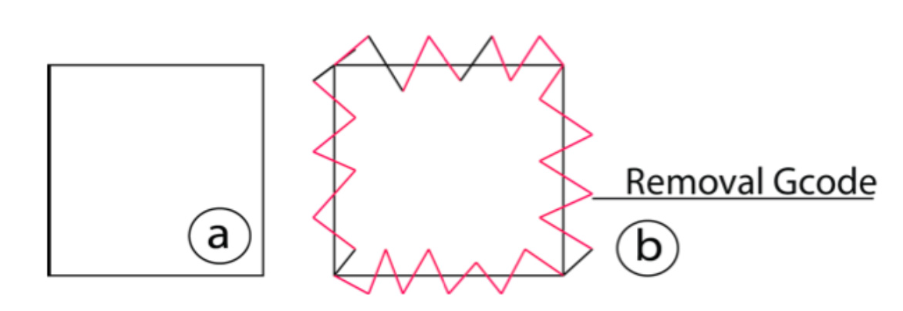
Figure 16: Removal GCODE generation: (a) To remove this rectangle, (b) the scraper moves along the red path
Tracking user input via the camera
To translate the camera coordinates to print bed coordinates, we perform a homography on all camera images. After this, we threshold the HSV values from the camera image to track the input color markers on users’ fingers.
Audio output and speech input
For both speech input recognition and speech output, Linespace uses the Microsoft Speech Platform SDK 11.
Contribution, Benefits, Limitations
The main contribution of this paper is a sensemaking platform for the blind. The key principle driving its design is to preserve user’s spatial memory by leaving displayed contents intact. To allow for this strategy, we provide Linespace with a very large display, i.e., 23x more display space than a Hyperbraille array. We achieve this by basing our mechanical design on a 3D printer that draws screen contents. Its ability to draw lines also makes our system particularly suited for the content types involved in spatial sensemaking tasks, such as graphs, diagrams, maps, and drawings.
We also contribute a software framework that allows developers to quickly build applications for Linespace.
Finally, the approach of using a 3D printer allows us to fabricate the device inexpensively ($400, about 1/200th of a Hyperbraille). The printing material incurs (insignificant) running costs.
The main limitation of Linespace is that plotting contents takes time; also the turn taking between user and device requires users to wait. We address these challenges in part using the design principles mentioned earlier in the paper.
Conclusion
We presented Linespace, an interactive system that allows visually impaired users to interact with spatial contents. By basing our design on a 3D printer, we were able to extend the display area to 140cm x 100cm. The increased interaction space allowed us to eliminate the necessity for many types of display updates, such as panning and zooming, thus allowing blind users to always stay within their spatial reference system.
As future work, we plan to examine how Linespace can be extended to help blind users with more complex sense making tasks. We are also planning on creating a mobile version.
Acknowlegdements
We thank Thomas Schumacher and Deike Sumann who organized our initial user survey visits at the school for blind children Johann-August-Zeune-Schule für Blinde. We thank Peter Woltersdorf and Paloma Rändel from the ABSV organization for their help with recruiting study participants. We also thank all our study participants for their time. We thank Martin Kurze for his feedback during the early stages of our project, Jack Lindsay for feedback on the hardware, and Doğa Yüksel for his help with setting up the study setup in our lab.